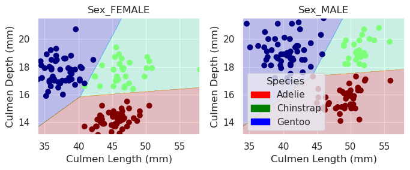

import pandas as pd
train_url = "https://raw.githubusercontent.com/PhilChodrow/ml-notes/main/data/palmer-penguins/train.csv"
train = pd.read_csv(train_url)Introduction
Let’s take a journey together! This is the first blog post in a series of exciting projects that I will be working on in my CSCI415 class. This class is focused on Machine Learning Theory, Implementation, Understanding the package environment within Python, Experimentation, and Social Responsibility. These Blog Posts are here to help me think critically of my work in this class, and reflect on work.
In this assignment, we are going to try to differentiate Penguin Species by various characteristics. Our work flow will be as follows:
- Load in data
- Explore the data graphically and tabularly
- Create a repeatable way to find the top characteristics
- Observe our results with a decision region plot
- Cross-validate to ensure we are not overfitting our data
Below begins our journey
Loading in Data
We are going to load in our training data for this project from a github url
Now we are going to take a look at our data and look for some potentially interesting features. My goal hear is to do some exploration through graphs and a bit of intuition to see if there are any key features that stick out to me.
train.head()| studyName | Sample Number | Species | Region | Island | Stage | Individual ID | Clutch Completion | Date Egg | Culmen Length (mm) | Culmen Depth (mm) | Flipper Length (mm) | Body Mass (g) | Sex | Delta 15 N (o/oo) | Delta 13 C (o/oo) | Comments | |
|---|---|---|---|---|---|---|---|---|---|---|---|---|---|---|---|---|---|
| 0 | PAL0809 | 31 | Chinstrap penguin (Pygoscelis antarctica) | Anvers | Dream | Adult, 1 Egg Stage | N63A1 | Yes | 11/24/08 | 40.9 | 16.6 | 187.0 | 3200.0 | FEMALE | 9.08458 | -24.54903 | NaN |
| 1 | PAL0809 | 41 | Chinstrap penguin (Pygoscelis antarctica) | Anvers | Dream | Adult, 1 Egg Stage | N74A1 | Yes | 11/24/08 | 49.0 | 19.5 | 210.0 | 3950.0 | MALE | 9.53262 | -24.66867 | NaN |
| 2 | PAL0708 | 4 | Gentoo penguin (Pygoscelis papua) | Anvers | Biscoe | Adult, 1 Egg Stage | N32A2 | Yes | 11/27/07 | 50.0 | 15.2 | 218.0 | 5700.0 | MALE | 8.25540 | -25.40075 | NaN |
| 3 | PAL0708 | 15 | Gentoo penguin (Pygoscelis papua) | Anvers | Biscoe | Adult, 1 Egg Stage | N38A1 | Yes | 12/3/07 | 45.8 | 14.6 | 210.0 | 4200.0 | FEMALE | 7.79958 | -25.62618 | NaN |
| 4 | PAL0809 | 34 | Chinstrap penguin (Pygoscelis antarctica) | Anvers | Dream | Adult, 1 Egg Stage | N65A2 | Yes | 11/24/08 | 51.0 | 18.8 | 203.0 | 4100.0 | MALE | 9.23196 | -24.17282 | NaN |
Following this, I made a rather arbitrary guess to take a look at the culmen depth and culmen length. I combined this with a hue to see the species as well as whether clutches were completed just to have a large range of variables potentially explored by this graph.
from matplotlib import pyplot as plt
import seaborn as sns
sns.set_theme(palette="bright")
#sns.scatterplot(data=train, x="Flipper Length (mm)", y="Body Mass (g)", hue="Culmen Depth (mm)", style="Clutch Completion")
sns.scatterplot(data=train, x="Culmen Depth (mm)", y="Culmen Length (mm)", hue="Species", style="Clutch Completion").set_title("Culmen Length and Culmen Depth of Chinstrap, Gentoo, and Adelie Penguins")Text(0.5, 1.0, 'Culmen Length and Culmen Depth of Chinstrap, Gentoo, and Adelie Penguins')Following this, I created a graph that showed the variation in Delta 13 temperature across the three different islands. I had an intuition that Islands might be used in the key features for my function and thuse wanted to explore this graphically.
sns.displot(train, x="Delta 13 C (o/oo)", col="Island", binwidth=.5, height=3)/home/manny/anaconda3/envs/ml-0451/lib/python3.11/site-packages/seaborn/_oldcore.py:1119: FutureWarning: use_inf_as_na option is deprecated and will be removed in a future version. Convert inf values to NaN before operating instead.
with pd.option_context('mode.use_inf_as_na', True):beautiful_table = train.groupby(["Species", "Island"]).aggregate({"Body Mass (g)" : ('mean') ,"Culmen Depth (mm)" : ('mean'), "Flipper Length (mm)": ('mean'), "Delta 15 N (o/oo)" :('mean')})
beautiful_table| Body Mass (g) | Culmen Depth (mm) | Flipper Length (mm) | Delta 15 N (o/oo) | ||
|---|---|---|---|---|---|
| Species | Island | ||||
| Adelie Penguin (Pygoscelis adeliae) | Biscoe | 3711.363636 | 18.475758 | 188.636364 | 8.788643 |
| Dream | 3728.888889 | 18.306667 | 190.133333 | 8.933945 | |
| Torgersen | 3712.804878 | 18.468293 | 191.195122 | 8.846768 | |
| Chinstrap penguin (Pygoscelis antarctica) | Dream | 3743.421053 | 18.366667 | 196.000000 | 9.331004 |
| Gentoo penguin (Pygoscelis papua) | Biscoe | 5039.948454 | 14.914433 | 216.752577 | 8.247341 |
After exploration, I can see that average Flipper Length and Delta 15 N differentiate between the species. I can also see how both the Chinstrap and Gentoo penguin only appear on one island each. While I believe these features might be key features, I am going to take a brute-force approach at finding the correct features by trying every possible combination of approaches.
Organizing Data
Following this graphical exploration, I need to use the LabelEncoder. The LabelEncoder is going to set increasingly large numbers starting from 0 to replace each label. For all other qualitative columns, they are are turned into 1’s and 0’s so that we can run our models on it.
from sklearn.preprocessing import LabelEncoder
le = LabelEncoder()
le.fit(train["Species"])
def prepare_data(df):
df = df.drop(["studyName", "Sample Number", "Individual ID", "Date Egg", "Comments", "Region"], axis = 1)
df = df[df["Sex"] != "."]
df = df.dropna()
y = le.transform(df["Species"])
df = df.drop(["Species"], axis = 1)
df = pd.get_dummies(df) #here is where we set all non-integer values to integers
return df, y
X_train, y_train = prepare_data(train)Lets use a more comprehensive search for choosing features!
Because our dataset is relatively smaller, we can use an exhaustive search for all the features contained in the dataset. This means we are going to look at every combination of qualitative columns with quantitative columns and then create a model on this. Following this we calculate an estimated score which we add to a dictionary of ratings.
from itertools import combinations
from sklearn.model_selection import cross_val_score
from sklearn.linear_model import LogisticRegression
import warnings
warnings.filterwarnings('ignore')
LR = LogisticRegression()
# these are not actually all the columns: you'll
# need to add any of the other ones you want to search for
all_qual_cols = ["Clutch Completion", "Sex", "Island"]
all_quant_cols = ['Culmen Length (mm)', 'Culmen Depth (mm)', 'Flipper Length (mm)','Body Mass (g)', 'Delta 15 N (o/oo)', 'Delta 13 C (o/oo)']
ratings = {}
for qual in all_qual_cols:
qual_cols = [col for col in X_train.columns if qual in col ]
for pair in combinations(all_quant_cols, 2):
# you could train models and score them here, keeping the list of
cols = qual_cols + list(pair)
LR.fit(X_train[cols], y_train)
#cv_scores_LR = cross_val_score(LR, X_train, y_train, cv=3)
estimated_score = LR.score(X_train[cols], y_train)
#estimated_score = cv_scores_LR.mean()
ratings[" ".join(cols)] = estimated_score We now have a dictionary of items that should tell us our highest scored combination
top_result = max(ratings, key=ratings.get)
top_result 'Sex_FEMALE Sex_MALE Culmen Length (mm) Culmen Depth (mm)'We are going to move our qualitative values to the end of our list because of our decision regions function we have later on
#top_result= ["Culmen Length (mm)", "Culmen Depth (mm)", "Clutch Completion_No", "Clutch Completion_Yes"]
top_result= ["Culmen Length (mm)", "Culmen Depth (mm)", "Sex_FEMALE", "Sex_MALE"]LR.fit(X_train[top_result], y_train)
LR.score(X_train[top_result], y_train)0.99609375Plotting Decisions Regions
Wow! Our rating is pretty high. Lets visualize what our model is doing by plotting Decisions Regions
from matplotlib import pyplot as plt
import numpy as np
from matplotlib.patches import Patch
def plot_regions(model, X, y):
x0 = X[X.columns[0]]
x1 = X[X.columns[1]]
qual_features = X.columns[2:]
fig, axarr = plt.subplots(1, len(qual_features), figsize = (7, 3))
# create a grid
grid_x = np.linspace(x0.min(),x0.max(),501)
grid_y = np.linspace(x1.min(),x1.max(),501)
xx, yy = np.meshgrid(grid_x, grid_y)
XX = xx.ravel()
YY = yy.ravel()
for i in range(len(qual_features)):
XY = pd.DataFrame({
X.columns[0] : XX,
X.columns[1] : YY
})
for j in qual_features:
XY[j] = 0
XY[qual_features[i]] = 1
p = model.predict(XY)
p = p.reshape(xx.shape)
# use contour plot to visualize the predictions
axarr[i].contourf(xx, yy, p, cmap = "jet", alpha = 0.2, vmin = 0, vmax = 2)
ix = X[qual_features[i]] == 1
# plot the data
axarr[i].scatter(x0[ix], x1[ix], c = y[ix], cmap = "jet", vmin = 0, vmax = 2)
axarr[i].set(xlabel = X.columns[0],
ylabel = X.columns[1],
title = qual_features[i])
patches = []
for color, spec in zip(["red", "green", "blue"], ["Adelie", "Chinstrap", "Gentoo"]):
patches.append(Patch(color = color, label = spec))
plt.legend(title = "Species", handles = patches, loc = "best")
plt.tight_layout()print(X_train[top_result], y_train)
plot_regions(LR, X_train[top_result], y_train) Culmen Length (mm) Culmen Depth (mm) Sex_FEMALE Sex_MALE
0 40.9 16.6 True False
1 49.0 19.5 False True
2 50.0 15.2 False True
3 45.8 14.6 True False
4 51.0 18.8 False True
.. ... ... ... ...
270 51.1 16.5 False True
271 35.9 16.6 True False
272 39.5 17.8 True False
273 36.7 19.3 True False
274 42.4 17.3 True False
[256 rows x 4 columns] [1 1 2 2 1 0 0 1 2 1 0 1 0 1 1 2 0 2 2 2 2 0 0 0 2 1 0 0 0 0 0 0 1 2 0 0 2
2 1 1 2 2 1 0 0 2 2 1 2 2 1 2 0 0 2 2 0 1 2 2 1 2 1 2 2 2 0 0 0 2 2 2 0 1
2 2 2 0 0 2 0 0 2 0 0 0 1 0 0 1 0 0 0 1 0 0 2 2 0 0 2 0 2 1 0 2 2 1 2 2 2
0 2 0 0 0 1 0 2 2 0 2 2 1 2 0 0 1 2 2 1 0 2 0 1 2 0 0 2 0 2 1 0 0 2 1 0 2
0 2 0 1 0 0 0 2 2 2 0 0 2 0 2 1 1 0 1 2 0 0 1 1 0 0 1 0 0 2 1 2 1 0 0 0 1
0 2 2 2 2 1 1 1 2 2 2 0 1 0 0 1 0 0 0 0 0 1 2 2 2 0 2 2 1 0 2 0 0 2 0 2 0
2 0 2 2 2 2 0 2 1 0 2 1 1 0 2 1 0 0 0 1 0 1 0 0 2 1 0 0 0 2 0 0 0 1]
Cross Validation
We want to calculate how our model will do on unseen data, and a useful way to simulate this is by performing cross-validation. We can take parts of the train data from being used, and then testing on those witheld parts, we can determine our accuracy.
from sklearn.model_selection import cross_val_score
cv_scores_LR = cross_val_score(LR, X_train, y_train, cv=5)
cv_scores_LR.mean()1.0We did it!
Next Steps
This would involve testing other models such as Decision Classfier Trees, and we could run the cross validation step within our brute-force attempt instead of after.